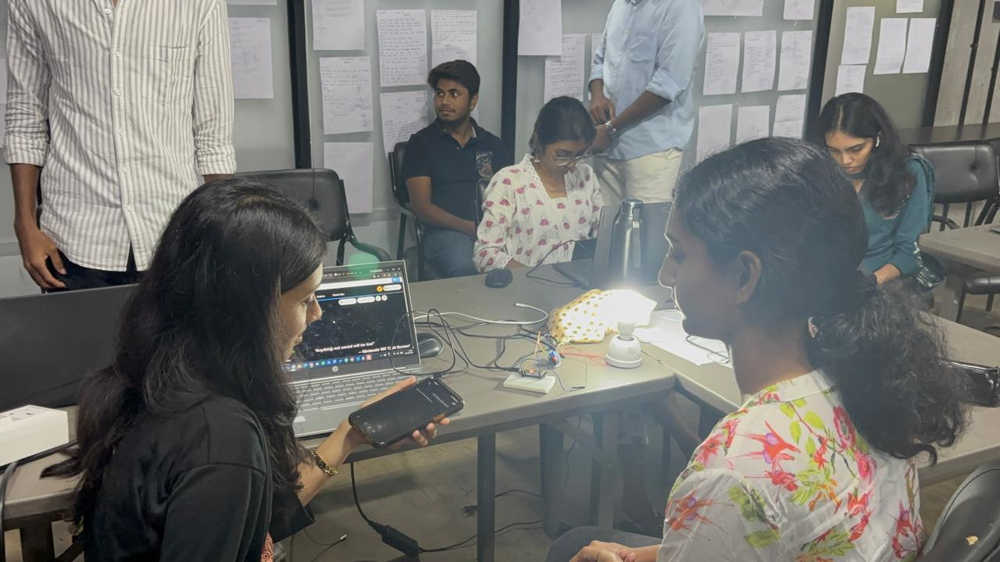
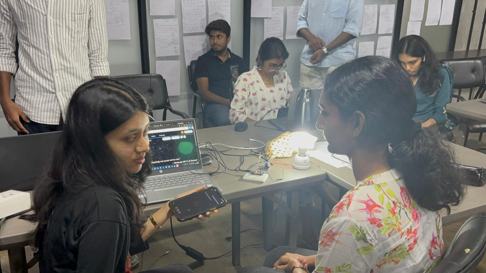

IFTTT + Adafruit IO Voice Automation
Voice control of the relay by chaining Google Assistant, IFTTT, Adafruit IO and the ESP32.
Objective of the IoT automation
Control the same relay-switched bulb by voice. Saying “Hey Google, activate bulb on” should switch the bulb on, with no phone app and no new firmware, by connecting existing cloud services.
Learning objectives
- Understand how voice interfaces work behind the scenes (speech recognition, intent, scene activation)
- Explain why multi-platform integration is complex but common in real products
- Handle latency across several services without ruining the user experience
- Use systematic testing to find where a chain of services fails
- Explain a multi-platform architecture clearly to other engineers
Basic concept of IoT automation
IoT automation means a system reacts to an event on its own, without a person operating a dashboard. An event (a voice command, a sensor value, a schedule) triggers an action (switch a device). Automation platforms connect the services that produce events to the services that perform actions.
What IFTTT is and why it is used
IFTTT (“If This Then That”) is a no-code service that links web services together with applets. Here it is the bridge between Google Assistant, which has no direct way to publish to Adafruit IO, and Adafruit IO’s web API. It avoids writing and hosting any server code.
Trigger → Action concept
An applet has one trigger (the “If This”) and one action (the “Then That”). When the trigger fires, IFTTT immediately runs the action.
| Applet 1: Bulb ON | Applet 2: Bulb OFF | |
|---|---|---|
| Trigger | Google Assistant, phrase activate bulb on | Google Assistant, phrase activate bulb off |
| Action | Webhooks, POST {"value":"ON"} to the feed | Webhooks, POST {"value":"OFF"} to the feed |
| Assistant reply | “Turning on the bulb” | “Turning off the bulb” |
Role of Adafruit IO in the automation
Adafruit IO receives the webhook as an HTTP request, stores the new value in the bulb feed and publishes it to the MQTT subscribers. To the ESP32 this looks exactly like a dashboard toggle (Task 2), which is why the same firmware is used.
Hardware and software used
| Item | Role |
|---|---|
| ESP32 + relay + bulb | Identical to Task 2 |
| Google Assistant (phone or Google Home speaker) | Voice input and natural-language recognition |
| IFTTT applets | Trigger → action glue |
Adafruit IO feed bulb | Receives the web request and publishes over MQTT |
IFTTT applet / workflow, trigger and action
Trigger identified: Google Assistant “activate scene” with the exact phrase from the applet.
Action performed: Webhooks “Make a web request” to the Adafruit IO REST API.
URL: https://io.adafruit.com/api/v2/<username>/feeds/bulb/data
Method: POST
Content-Type: application/json
Header: X-AIO-Key: <your key> (or ?x-aio-key=<your key> in the URL)
Body: {"value":"ON"} (or {"value":"OFF"} in applet 2)
Response: 201 Created {"id": "...", "value": "ON", "created_at": "..."}How the trigger reaches the IoT system / communication data flow
"Hey Google, activate bulb on"
│
▼ Google Assistant (speech → intent)
▼ IFTTT (matches the applet)
▼ Webhooks: HTTPS POST {"value":"ON"}
▼ Adafruit IO REST API → updates feed "bulb"
▼ Adafruit IO MQTT broker publishes to subscribers
▼ ESP32 callback → GPIO26 LOW
▼ Relay closes → 230 V circuit complete
BULB ONMeasured end-to-end time was about 2–3 seconds. The main delays are in the cloud services (voice processing, IFTTT execution, web request and MQTT delivery). Keeping a persistent Wi-Fi/MQTT connection and handling requests asynchronously on the device brought typical times down to roughly 1.2–1.5 seconds.
Latency breakdown
| Stage | Typical time |
|---|---|
| Google Assistant (speech + network) | about 0.5 s |
| IFTTT applet execution | about 0.3 s |
| Webhook POST to Adafruit IO | about 0.2 s |
| Adafruit IO processing + MQTT publish | about 0.2 s |
| MQTT delivery to the ESP32 | about 0.1 s |
| Relay switching | about 0.05 s |
| Total | about 2–3 s (1.2–1.5 s after optimising the device side) |
Optimisations that helped: a persistent Wi-Fi/MQTT connection (about 0.3 s saved) and asynchronous instead of serial requests (about 0.2 s saved). The cloud-side stages cannot be changed, so the device side is where the time was won.
ESP32 source code
The firmware is the same as Task 2. The ESP32 only subscribes to the feed, so it does not matter whether a dashboard or IFTTT published the message.
Show task2_task3_mqtt_relay.ino
// Tasks 2 & 3 - ESP32 subscribes to an Adafruit IO feed (MQTT) and drives a relay.
// Task 2: the feed is changed from the Adafruit IO dashboard toggle.
// Task 3: the same feed is changed by an IFTTT webhook (Google Assistant voice command).
// The ESP32 code is identical for both - only the publisher changes.
// Library: "Adafruit IO Arduino" (+ Adafruit MQTT Library)
#include <AdafruitIO_WiFi.h>
#define IO_USERNAME "YOUR_ADAFRUIT_USERNAME"
#define IO_KEY "YOUR_ADAFRUIT_IO_KEY" // never commit your real key
#define WIFI_SSID "YOUR_WIFI_SSID"
#define WIFI_PASS "YOUR_WIFI_PASSWORD"
AdafruitIO_WiFi io(IO_USERNAME, IO_KEY, WIFI_SSID, WIFI_PASS);
AdafruitIO_Feed *bulb = io.feed("bulb"); // MQTT topic: <username>/feeds/bulb
#define RELAY_PIN 26
#define RELAY_ON LOW // relay module is ACTIVE-LOW: LOW energises the coil
#define RELAY_OFF HIGH
void handleBulbCommand(AdafruitIO_Data *data) {
String command = data->toString();
command.trim();
command.toUpperCase();
if (command == "ON" || command == "1") {
digitalWrite(RELAY_PIN, RELAY_ON);
Serial.println("RELAY: ON -> bulb powered");
} else if (command == "OFF" || command == "0") {
digitalWrite(RELAY_PIN, RELAY_OFF);
Serial.println("RELAY: OFF -> bulb disconnected");
}
}
void setup() {
Serial.begin(115200);
delay(1000);
pinMode(RELAY_PIN, OUTPUT);
digitalWrite(RELAY_PIN, RELAY_OFF); // start with the bulb OFF (fail-safe)
bulb->onMessage(handleBulbCommand); // callback for incoming MQTT messages
io.connect();
while (io.status() < AIO_CONNECTED) { Serial.print("."); delay(500); }
Serial.println("\nAdafruit IO connected! Listening for commands...");
bulb->get(); // fetch the last stored value on start-up
}
void loop() {
io.run(); // keeps the MQTT connection alive
}
Screenshots, photographs and video
Screenshots of the IFTTT configuration


Screenshots of the Adafruit IO feed


Photographs of the working prototype


Video of the complete automation
Automation tested under different conditions
| Step | Action | Expected result |
|---|---|---|
| 1 | Say the voice command | Assistant speaks the confirmation |
| 2 | Open the IFTTT activity log | Applet shows as completed |
| 3 | Open the Adafruit IO feed | Latest value is ON |
| 4 | Watch the Serial Monitor | Shows the relay ON message |
| 5 | Listen to the relay | Audible click |
| 6 | Observe the bulb | Bulb lights up within a few seconds |
| 7 | Repeat with the OFF phrase; try commands in quick succession; try a wrong phrase | OFF works; rapid repeats may be skipped by rate limiting; wrong phrase is not recognised |
Problems and their solutions
| Problem | Cause | Solution |
|---|---|---|
| Assistant does not recognise the command | Phrase does not match the applet, or different Google accounts | Say the exact phrase; use the same Google account on the device and in IFTTT |
| Applet shows “Skipped” or nothing happens | IFTTT rate limiting; malformed URL or JSON; wrong Content-Type | Wait about 30 s between tests; check URL, JSON and application/json |
| Adafruit feed does not change | Wrong or regenerated key; feed name not exactly bulb | Regenerate and re-enter the key; check the feed name |
| ESP32 receives nothing | Not connected to Adafruit IO, or feed name mismatch in code | Check the Serial Monitor; check io.feed("bulb") |
| Response felt slow (>3 s) | Latency adds up across every service | Measured each hop, then kept connections persistent and requests asynchronous |
What I learned about cloud-based automation
- Voice control is several services in a chain. Reliability is only as good as the weakest link.
- Webhooks (event-driven HTTP callbacks) are the glue that connects otherwise unrelated platforms.
- Rate limits and exact phrases matter, so testing has to be systematic and patient.
Files in the repository
code/task2_task3_mqtt_relay.ino: ESP32 sketch- This write-up:
task3.html